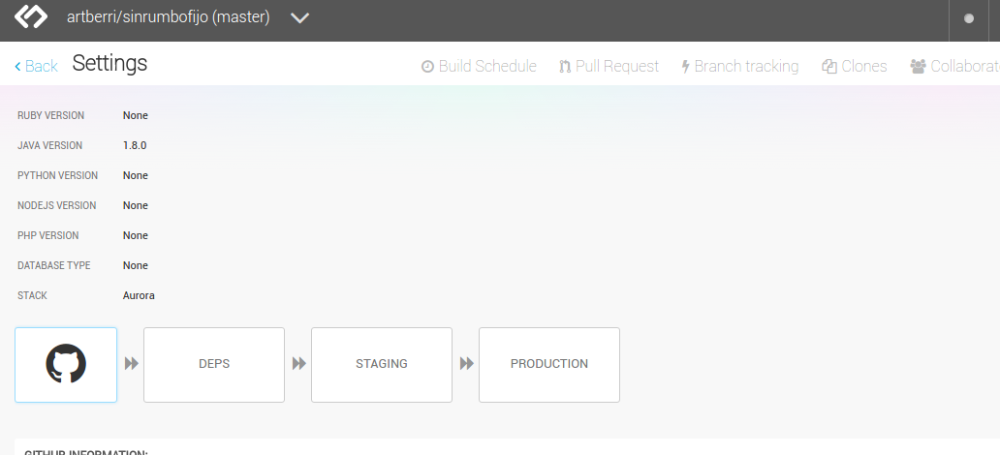
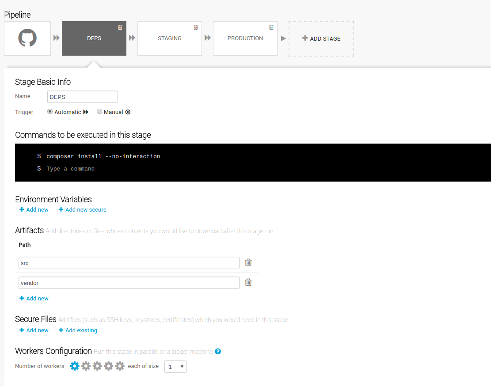
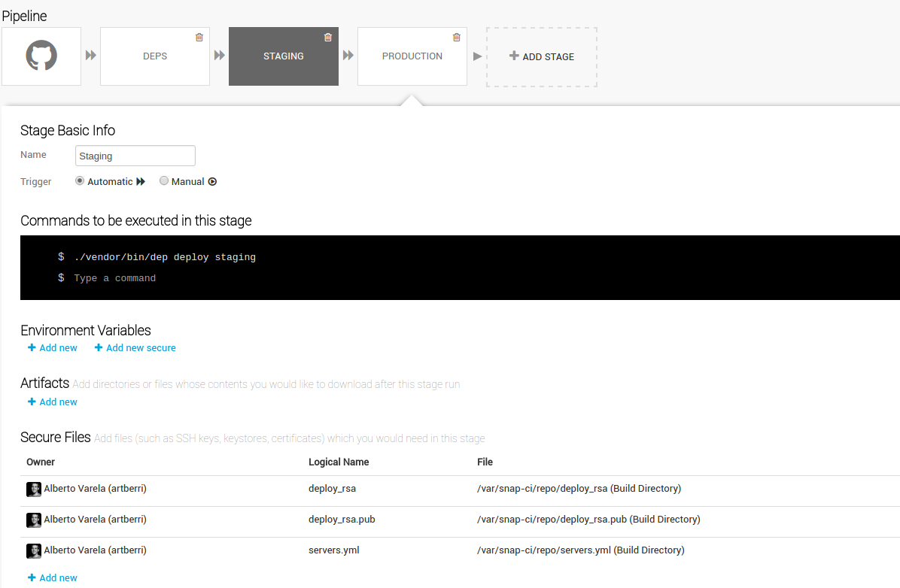
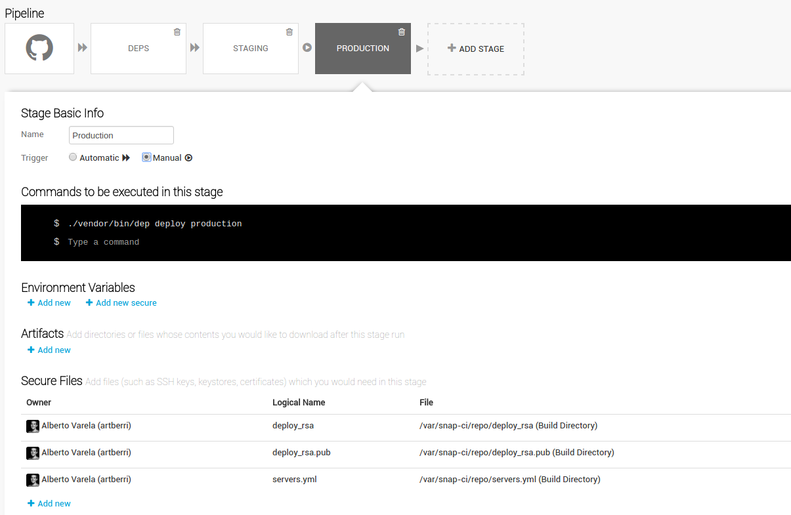
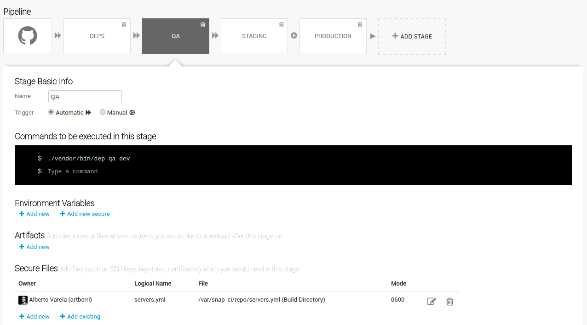
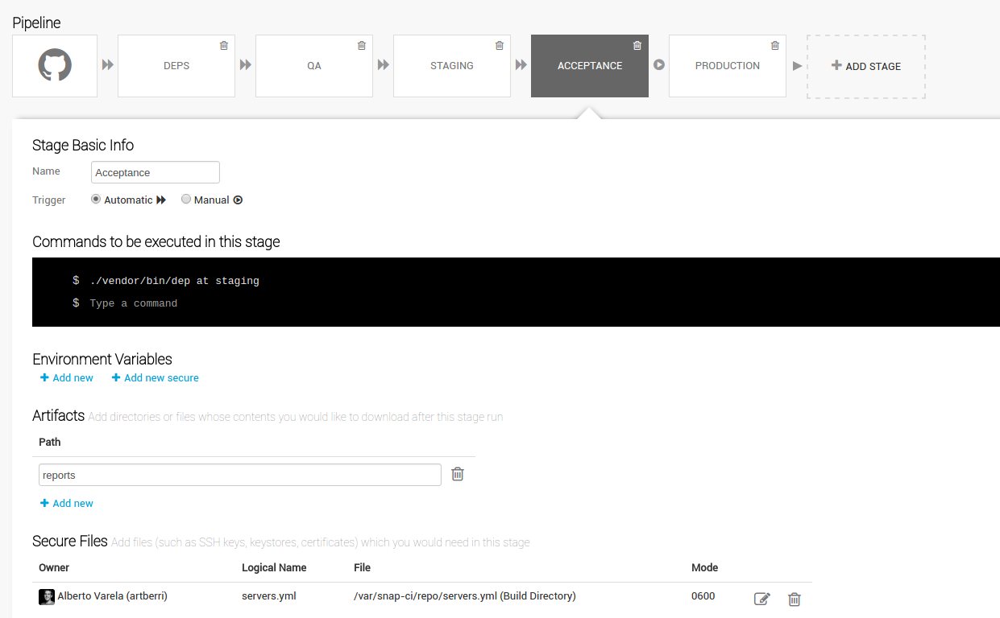
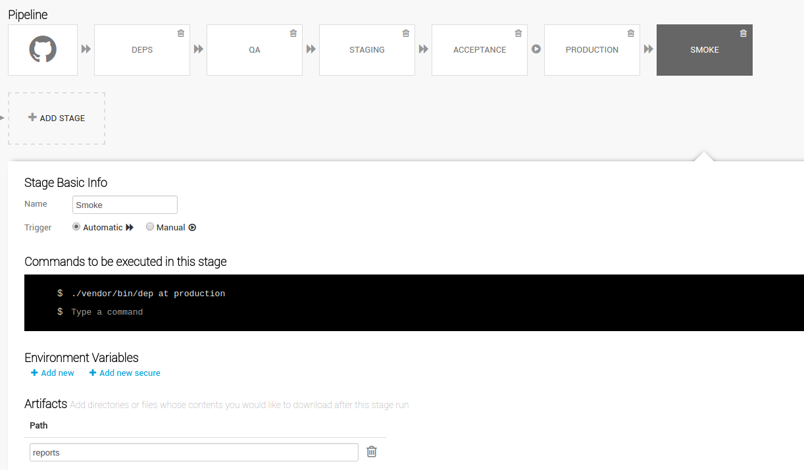

Desplegando
WordPress
como un profesional
Quién habla?
Soy Alberto Varela y trabajo en Travioor
www.berriart.com | alberto@berriart.com | @artberri
Webs VS Webs profesionales
Webs VS Webs profesionales
Despliegues VS Despliegues profesionales
Despliegues VS Despliegues profesionales

Cómo?
El 'Dogma'
Los desarrolladores son los únicos responsables del código
Gente que no debería poner código en producción:
- El cliente
- El departamento de márketing
- "El jefe"
- Matt Mullenweg
wp-config.php
Deshabilita cualquier modificación de código desde el administrador.
<?php
// Disable the Plugin and Theme Editor
define( 'DISALLOW_FILE_EDIT', true );
// Disable Plugin and Theme Update and Installation
define( 'DISALLOW_FILE_MODS', true );
// Disable All Automatic Updates
define( 'AUTOMATIC_UPDATER_DISABLED', true );
Más información sobre constantes: Wordpress Codex.
Version Control System
Git
Self hosted, Github, Bitbucket, Gitlab, VSO...
Subversion
No Pull Requests :(
Gestionando dependencias
Composer + WPackagist
# composer.json
{
"name": "mycompany/brilliant-wordpress-site",
"repositories":[
{
"type": "composer",
"url": "https://wpackagist.org"
}
],
"require": {
"php": ">=5.4",
"johnpbloch/wordpress": "^4.5",
"wpackagist-plugin/wordpress-seo": "^3.2",
"wpackagist-plugin/mailchimp-for-wp": "^3.1",
"wpackagist-theme/yourparenttheme": "^1.3",
}
}
WP-CLI puede ser otra opción para gestionar dependencias.
Tu código: Themes & Plugins
- Todo tu código debería estar organizado en Themes & Plugins, y es el único código que debería estar en control de versiones.
- No modifiques ninguna dependencia. Ni plugins, ni themes. Usa hooks, actions y child themes para sobrescribirlos.
Branching y pull requests
- Git workflows: Centralizado, Feature Branch, Gitflow, Forking Workflow...
- Haz revisiones de código con pull requests. Aquí puedes ver unos consejos para mejorar tu proceso de revisión de código.
Vamos
a hacer
una Pull
Request!
La 'Regla'
El despliegue debe estar totalmente automatizado
No más "Works on my machine"
Herramientas de despliegue y Task Runners
Ejemplo con Deployer
Instalar con composer:
composer require --dev deployer/deployer
composer require --dev deployphp/recipes
Tu composer.json incluirá ahora la referencia a las dependencias:
# composer.json
# ...
"require-dev": {
"deployer/deployer": "^3.2",
"deployphp/recipes": "^3.1",
},
# ...
Ejemplo con Deployer
Configurar los pasos de despliegue en el fichero deploy.php:
<?php
// deploy.php
require 'recipe/common.php';
require 'vendor/deployphp/recipes/recipes/configure.php';
require 'vendor/deployphp/recipes/recipes/rsync.php';
set('shared_dirs', [
'wp-content/uploads',
'wp-content/cache',
]);
set('shared_files', [
'wp-config.php',
]);
set('writable_use_sudo', false);
set('http_user', 'deploy');
env('rsync_src', __DIR__ . '/src');
set('rsync', [
'exclude' => [
'wp-content/upgrade',
'wp-content/cache',
'wp-config.php',
'wp-content/uploads',
],
]);
set('keep_releases', 5);
task('deploy', [
'deploy:prepare',
'deploy:release',
'deploy:configure',
'rsync',
'deploy:shared',
'deploy:symlink',
'cleanup',
])->desc('Deploy project');
after('deploy', 'success');
serverList(__DIR__ . '/servers.yml');
Ejemplo con Deployer
Configurar las credenciales y los servidores en el fichero servers.yml:
# servers.yml
staging:
host: staging.sinrumbofijo.com
user: deploy
identity_file:
public_key: deploy_rsa.pub
private_key: deploy_rsa
password: ''
stage: staging
deploy_path: /home/www/staging.sinrumbofijo.com
app:
url: http://staging.sinrumbofijo.com
root: /home/www/staging.sinrumbofijo.com/current
db:
name: 'staging_database_name'
user: 'staging_database_user'
pass: 'staging_database_pass'
host: 'staging_database_host'
secret:
auth_key: 'write a better secret here'
secure_auth_key: 'write a better secret here'
logged_in_key: 'write a better secret here'
nonce_key: 'write a better secret here'
auth_salt: 'write a better secret here'
secure_auth_salt: 'write a better secret here'
logged_in_salt: 'write a better secret here'
nonce_salt: 'write a better secret here'
production:
host: www.sinrumbofijo.com
user: deploy
identity_file:
public_key: deploy_rsa.pub
private_key: deploy_rsa
password: ''
stage: staging
deploy_path: /home/www/www.sinrumbofijo.com
app:
url: http://www.sinrumbofijo.com
root: /home/www/www.sinrumbofijo.com/current
db:
name: 'production_database_name'
user: 'production_database_user'
pass: 'production_database_pass'
host: 'production_database_host'
secret:
auth_key: 'write a better secret here'
secure_auth_key: 'write a better secret here'
logged_in_key: 'write a better secret here'
nonce_key: 'write a better secret here'
auth_salt: 'write a better secret here'
secure_auth_salt: 'write a better secret here'
logged_in_salt: 'write a better secret here'
nonce_salt: 'write a better secret here'
Ejemplo con Deployer
Y ahora, desplegar es tan simple como ejecutar:
./vendor/bin/dep deploy staging
./vendor/bin/dep deploy production
Herramientas de Integración Continua
Puedes ver una comparación más detallada en Stackshare.
Ejemplo con Snap.CI
Ejemplo con Snap.CI

Ejemplo con Snap.CI

Ejemplo con Snap.CI

Ejemplo con Snap.CI

Entonces...
Te atreves
a desplegar
ahora
mismo?
El 'máximo'
El testeo debe estar totalmente automatizado
Antes de subir código
Linting
Todo el equipo debe usar las mismas 'coding conventions' y comprobar que se siguen con PHP_CodeSniffer, también te ayuda a evitar errores.
Instalar PHP_CodeSniffer con composer:
composer require --dev squizlabs/php_codesniffer
composer require --dev wp-coding-standards/wpcs:dev-master
# composer.json
# ...
"require-dev": {
"squizlabs/php_codesniffer": "^2.6",
"wp-coding-standards/wpcs": "dev-master",
},
# ...
Linting
Configurar las reglas en el fichero phpcs.xml.
<!-- phpcs.xml -->
<?xml version="1.0"?>
<ruleset name="PHP_CodeSniffer">
<description>The coding standard for PHP_CodeSniffer itself.</description>
<file>src/wp-content/themes/your-theme</file>
<file>src/wp-content/plugins/your-plugin1</file>
<file>src/wp-content/plugins/your-plugin2</file>
<arg name="report" value="summary"/>
<arg value="np"/>
<rule ref="PEAR.WhiteSpace.ScopeIndent">
<properties>
<property name="indent" value="2"/>
</properties>
</rule>
<rule ref="vendor/wp-coding-standards/wpcs"/>
</ruleset>
Linting
Y añadir el paso al 'task runner' (Deployer).
<?php
// deploy.php
require 'recipes/qa.php';
<?php
// recipes/qa.php
task('qa:phpcs', function () {
$output = runLocally('./vendor/bin/phpcs');
writeln('' . $output . ' ');
})->desc('Run PHPCS');
task('qa', [
'qa:phpcs',
])->desc('Code quality checks');
Linting
Otras herramientas:
Unit Testing
Do the things right
Sí, puedes (debes) hacer unit test con tus themes y plugins.
WP_Mock está desarrollado por '10up' donde trabaja Lucy Tomas (ponencia después de comer).
Unit Testing
Instalar con composer:
composer require --dev phpunit/phpunit
composer require --dev 10up/wp_mock:dev-master
# composer.json
# ...
"require-dev": {
"phpunit/phpunit": "^4.8",
"10up/wp_mock": "dev-master",
},
# ...
Unit Testing
Configurar en el fichero phpunit.xml.
<!-- phpunit.xml -->
<phpunit bootstrap="tests/bootstrap.php">
<testsuites>
<testsuite name="projectname">
<directory>tests</directory>
</testsuite>
</testsuites>
<filter>
<whitelist processUncoveredFilesFromWhitelist="true">
<directory suffix=".php">src/wp-content/themes/your-theme</directory>
</whitelist>
</filter>
<logging>
<log type="coverage-html" target="reports/html/phpunit/coverage" lowUpperBound="35"
highLowerBound="70"/>
<log type="coverage-text" target="php://stdout" showUncoveredFiles="false"/>
<log type="junit" target="reports/phpunit.results.xml" logIncompleteSkipped="false"/>
</logging>
</phpunit>
Unit Testing
Y añadir el paso al 'task runner' (Deployer)..
<?php
// recipes/qa.php
task('qa:phpunit', function () {
$output = runLocally('./vendor/bin/phpunit');
writeln('' . $output . ' ');
})->desc('Run PHPUnit');
task('qa:phpcs', function () {
$output = runLocally('./vendor/bin/phpcs');
writeln('' . $output . ' ');
})->desc('Run PHPCS');
task('qa', [
'qa:phpcs',
'qa:phpunit',
])->desc('Code quality checks');
Ejecutar:
./vendor/bin/dep qa
Añadir al 'deployment pipeline'

Después del despliegue
Test funcionales
Do the right things
Sí, puedes (debes) hacer test funcionales a tu web WordPress.
Test funcionales
Instalar con composer:
composer require --dev behat/behat
composer require --dev behat/mink-extension
composer require --dev behat/mink-goutte-driver
composer require --dev behat/mink-selenium2-driver
composer require --dev se/selenium-server-standalone
# composer.json
# ...
"require-dev": {
"behat/behat": "~3.0.6",
"behat/mink-extension": "^2.2",
"behat/mink-goutte-driver": "^1.2",
"behat/mink-selenium2-driver": "^1.3",
"se/selenium-server-standalone": "^2.53"
},
# ...
Test funcionales
Configurar Behat en el fichero behat.yml:
# behat.yml
default:
extensions:
Behat\MinkExtension:
base_url: 'http://yoursite.local'
browser_name: 'firefox'
sessions:
default:
goutte: ~
browser:
selenium2: ~
javascript_session: 'browser'
emuse\BehatHTMLFormatter\BehatHTMLFormatterExtension:
name: html
renderer: Twig,Behat2
file_name: index
print_args: true
print_outp: true
loop_break: true
formatters:
pretty: true
html:
output_path: %paths.base%/reports/html/behat
staging:
extensions:
Behat\MinkExtension:
base_url: 'http://staging.yoursite.com'
production:
extensions:
Behat\MinkExtension:
base_url: 'http://www.yoursite.com'
Test funcionales
Definir algunos test (e implementarlos, claro)
@mink:browser
Feature: Article
In order to interact with the author
As a user
I need to be able to read and comment articles or navigate to related info
Background:
Given I am on the homepage
And I hover over the element ".smartlib-grid-list article.post .wp-post-image"
And I click on ".smartlib-grid-list article.post .smartlib-caption-link"
@smoke
Scenario: See sections
Then I should see "Deja un comentario"
And I should see "Entradas relacionadas"
And I should see "Entradas recientes"
Scenario: Make a comment
When I fill in the following:
| author | Testuser |
| email | test@example.com |
| url | http://example.com |
And I fill in "comment" with 15 random words
And I press "Publicar comentario"
Then I should see "Testuser"
Test funcionales
Y añadir el paso al 'task runner' (Deployer).
<?php
// recipes/at.php
task('at', function () {
$stage = env('app.stage');
$testCommand = './vendor/bin/behat';
if ('dev' != $stage) {
$testCommand .= ' --profile=' . $stage;
}
$seleniumPid = runLocally('nohup ./vendor/bin/selenium-server-standalone > /dev/null 2> /dev/null & echo $!');
writeln('Selenium running with pid: ' . $seleniumPid . ' ');
writeln('Waiting until selenium is started ');
$output = runLocally('sleep 7');
writeln('Selenium started ');
$output = runLocally($testCommand, 600);
writeln('' . $output . ' ');
$output = runLocally('kill ' . $seleniumPid);
writeln('Selenium stopped ');
})->desc('Run Acceptance Tests');
Ejecutar:
./vendor/bin/dep at staging
Añadirlo al 'deployment pipeline'

Añadirlo al 'deployment pipeline'

Finalmente, hemos implementado...
Continous Delivery
Finalmente, hemos implementado...
Continous Deployment
Continous Delivery
VS
Continous deployment

Mira este post para más info.
Sí,
recuerdo
el despliegue.
Veamos
si fue bien!
Links del ejemplo completo
Good job!
Gracias
Preguntas